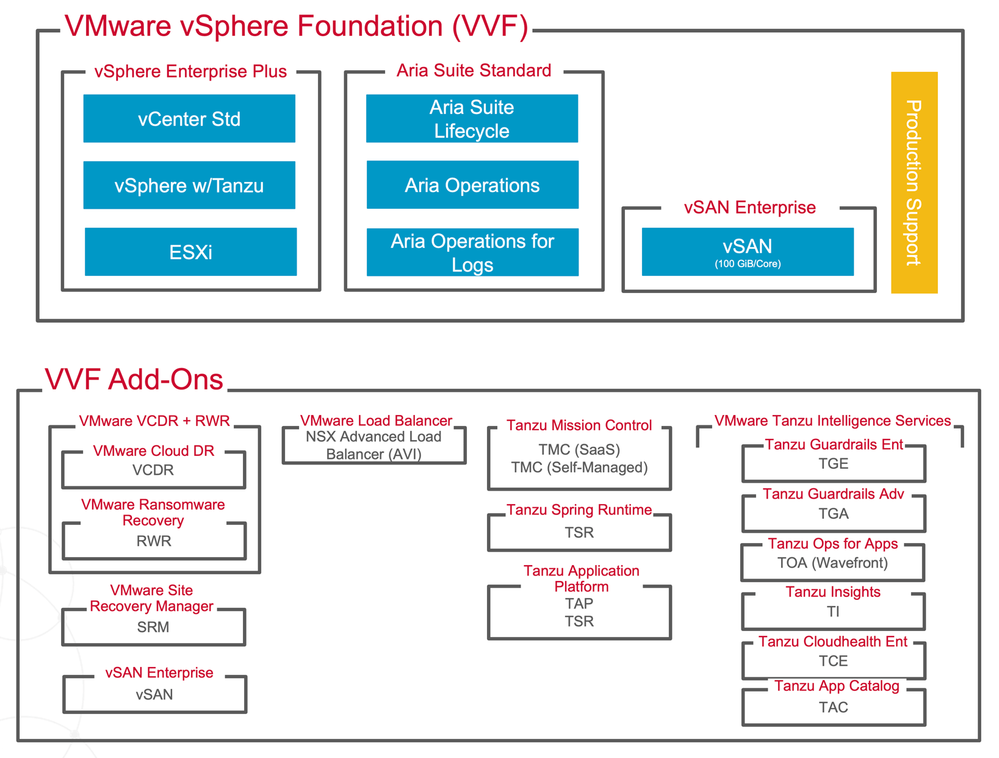

请访问原文链接：VMware vSphere Foundation (VVF) - 企业级工作负载平台组合解决方案 查看最新版。原创作品，转载请保留出处。
作者主页：sysin.org

VMware by Broadcom 产品组合：
- VMware Cloud Foundation (VCF) - 多云全栈基础架构组合解决方案
- VMware vSphere Foundation (VVF) - 企业级工作负载平台组合解决方案
- VMware vSphere Enterprise Plus - 领先的企业工作负载平台
- VMware vSphere Standard - 面向中小型企业及分支机构的工作负载平台
-
VMware vSphere Essentials Plus Kit (VVEP) - 面向小型企业的工作负载平台(2024 年 11 月 取消)
VMware vSphere Foundation 简介
VMware vSphere Foundation 是一款新产品，旨在优化您的数据中心，并且是企业工作负载平台，可提高各种规模组织的运营效率、增强工作负载性能并加速创新 (sysin)。它提供预测性和主动性运营管理，专为实现基础设施和应用程序的最佳性能、可用性和效率而设计。它可以提高性能并防止整个 IT 环境中断，从应用程序到存储的智能操作可在一处提供简化的可用性和全面的可见性。

vSphere 在 2023 年冬季服务器虚拟化 G2 企业网格报告中排名第一
VMware vSphere Foundation 提供：
- 通过优化和容量管理，硬件成本降低 20%
- 平均解决时间缩短 50%，并可快速修复
- 通过智能洞察将计划外停机时间减少 93%
- 容器和虚拟机的集成自助服务平台，具有嵌入式 Kubernetes
希望购买 vSphere Enterprise Plus 或 vCloud Suite Standard 的客户通过采用 VMware vSphere Foundation 进行 3 年订阅，可节省高达 50% 的成本 (sysin)。此外，他们还将配备一流的解决方案，无需额外费用即可应对扩展、现代工作负载和效率挑战。
为什么选择 VMware vSphere Foundation？- 不断变化的景观
在信息技术领域，我们正在见证已经影响大型企业的增长趋势的延续。这些变化将影响各种规模和行业的企业。
2024 年及以后，客户将希望：
节省更多
规模化简单化，通常称为 “用更少的资源做更多的事”。企业需要优先考虑其 IT 基础设施可以提供的结果，而不是投入宝贵的时间来解决因不可靠的单点解决方案而产生的问题 (sysin)。VMware 提供最灵活且最具成本效益的私有云基础架构，使客户能够根据需求的变化进行构建和定制。
降低风险
借助 VMware，我们可以利用经过验证的基础架构解决方案和广泛的生态系统，部署该解决方案的客户数量比任何其他供应商都多。通过与现有投资无缝集成，无需任何供应商锁定，VMware 解决方案让客户高枕无忧。
多做一些
业务不断数字化，在快速的市场变化中，企业需要一种 IT 能力，为任何类型的工作负载提供适应和扩展的灵活性。VMware 使客户能够更快地推出应用程序，并可以自由地利用统一平台来处理传统和现代工作负载。
从永久许可模式转向订阅模式的行业宏观趋势加剧了这一动态格局。管理多种订阅解决方案的多样化组合可能是一项复杂的任务，企业正在寻求简化采购和供应商 / 许可证管理。
VMware vSphere Foundation 产品组合
VMware 长期以来一直是全球企业值得信赖的基础架构解决方案提供商，可帮助您管理变革并发展业务。VMware 解决方案（尤其是 vSphere）在各种能力方面一直被评为同类最佳解决方案 (sysin)，长期以来，企业一直将 VMware 解决方案视为 “行之有效” 的解决方案。
在 VMware，我们的首要重点始终是提供能够无缝应对客户当前和未来挑战的解决方案。中先前讨论的那样 正如 Krish Prasad 博客，Broadcom 的收购加速了我们简化、增强功能并降低成本的能力。
VMware vSphere Foundation 为当前使用 vSphere Enterprise Plus 或 vCloud Suite Standard 的用户提供了理想的过渡路径。与此同时，对基本硬件整合或极少数服务器上的虚拟化等要求较低的客户仍然可以使用 vSphere Standard 或 vSphere Essentials Plus Kit。

VMware vSphere Foundation 是 VMware 推出的全新集成产品。但是，为了帮助理解该解决方案的构成，以下概述涉及制作该解决方案的遗留组件：
-
vSphere Enterprise Plus
- vSphere ESXi
- vCenter Standard
- vSphere with Tanzu (includes TKG Runtime)
-
Aria Suite Standard
- Aria Operations
- Aria Operations for Logs
- Aria Suite Lifecycle
-
vSAN Enterprise (includes 250GiB per CPU Core per host as free trial)
注：2024 年 11 月之前的 100GiB 增加为 250GiB per core -
Production Support Service
在 vSphere Foundation 之上，您可以部署各种基于用例的附加组件，如下所示：
- VMware Cloud Disaster Recovery (VCDR)
- Sold as protected TiB and Per Protected VM
- VMware Ransomware Recovery (RWR)
- Sold as Per Protected VM
- VMware Site Recovery (SRM)
- Sold as pack of 25 VMs
- vSAN Enterprise
- Sold as Per TiB (minimum purchase is 8TiB per CPU Socket)
- VMware Load Balancer (NSX Advanced Load Balancer) (sysin)
- Sold as per service unit
- Tanzu Mission Control (TMC)
- Sold as per CPU Core
- TMC SaaS
- TMC (Self-Managed)
- Tanzu Application Platform (TAP)
- TAP
- Sold as per vCPU
- Tanzu Spring Runtime
- Sold as per CPU Core
- TAP
- Tanzu Spring Runtime (TSR)
- Sold as per CPU Core
- Tanzu Guardrails Enterprise (TGE)
- Sold as per resource
- Tanzu Hub
- Tanzu Guardrails
- Aria Automation Config (formally Saltstack)
- Automation for Secure Clouds
- Automation for Secure Host
- Tanzu Guardrails Advanced (TGA)
- Sold as per resource
- Tanzu Hub
- Tanzu Guardrails
- Automation for Secure Clouds
- Tanzu Cloudhealth Enterprise (TCE)
- Sold as percentage of monthly cloud spend
- Tanzu Application Catalog (TAC)
- Sold as active artifact
- Tanzu Ops for Apps (formally Wavefront)
- Sold as point per second (PPS)
- Tanzu Insights (TI)
- Sold as event per month
下载地址
VMware vSphere Foundation 说是一款新产品，也不是一款新产品，是一种新的组合解决方案或者捆绑许可方式。

解决方案组件：
-
vSphere Enterprise Plus：VMware vSphere 8.0 Update 3d 下载 - 企业级工作负载平台
- vSphere ESXi：VMware ESXi 8.0U3c - 领先的裸机 Hypervisor
- vSphere ESXi 定制版：VMware ESXi 8.0U3c macOS Unlocker & OEM BIOS 2.7 标准版和厂商定制版
- vSphere ESXi 定制版：VMware ESXi 8.0U3c macOS Unlocker & OEM BIOS 2.7 集成网卡驱动和 NVMe 驱动 (集成驱动版)
- vCenter Standard：VMware vCenter Server 8.0U3d - 集中管理 vSphere 环境
- vSphere with Tanzu：VMware Tanzu Kubernetes Grid (TKG) 2.5.2 - 企业级 Kubernetes 解决方案
-
Aria Suite Standard：VMware Aria Suite 8.18 下载汇总 - 云管理解决方案
- Aria Operations：VMware Aria Operations 8.18.1 - 多云 IT 运维管理
- Aria Operations for Logs：VMware Aria Operations for Logs 8.18 - 集中式日志管理
- Aria Suite Lifecycle：VMware Aria Suite Lifecycle 8.16 - 应用生命周期管理
-
vSAN Enterprise (includes 250GiB per CPU Core per host as free trial)：VMware vSAN 8.0U3b - 存储虚拟化软件
注：2024 年 11 月之前的 100GiB 增加为 250GiB per core -
Production Support Service
在 vSphere Foundation 之上，您可以部署各种基于用例的附加组件，如下所示：
- VMware Site Recovery：VMware Site Recovery Manager 9.0 - 数据中心灾难恢复 (DR)
- vSAN Enterprise (Expansion)：VMware vSAN 8.0U3b - 存储虚拟化软件
- VMware Load Balancer (NSX Advanced Load Balancer)：VMware NSX Advanced Load Balancer (NSX ALB) 30.1.2 - 多云负载均衡平台
- 其他仅 SaaS 产品未列出

文章用于推荐和分享优秀的软件产品及其相关技术，所有软件默认提供官方原版（免费版或试用版），免费分享。对于部分产品笔者加入了自己的理解和分析，方便学习和研究使用。任何内容若侵犯了您的版权，请联系作者删除。如果您喜欢这篇文章或者觉得它对您有所帮助，或者发现有不当之处，欢迎您发表评论，也欢迎您分享这个网站，或者赞赏一下作者，谢谢！
 支付宝赞赏
支付宝赞赏
 微信赞赏
微信赞赏
赞赏一下